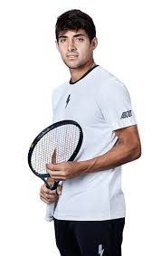

fecha de publicacion 29 demarzo de 2024 17:50
El chileno cayo sin pelacion ante el tenista aleman bemjamin hassan y quedo fuera del challengr de girona.
Cristian Garin (104) esta teniendo un complejo inicio de año, y este viernes 29 de marzo sufrio un nueva y contundente derrota por los cuarto de final del challenger de Girona a manos del aleman benjamin hassan (156). el tenista nacional cayo por globales de 6-3 y 6-1 en una hora y 22 minutos de juego, siendo superado durante todo el encuentro por su rival. Esto le significara una caida en el ranking ATP, que anteriormente le costo bajar a los torneos challenger, y se ubicara 112 del mundo.
A pesar de esto, garin logro meterse entre los 8 mejores de dich competicion, siendo esto una mejora en ralcion a sus anteriores participaciones en torneos de la especialidad. durante el desarrollo del challenger, se impuso al tenista portugues henrrique roch(248) por 4-6, 6-3 y 7-6 en su debut, derrotando posteriormente al estadounidense nicolas moreno de albaron (158) por 7-6 y 6-2 en octavos.